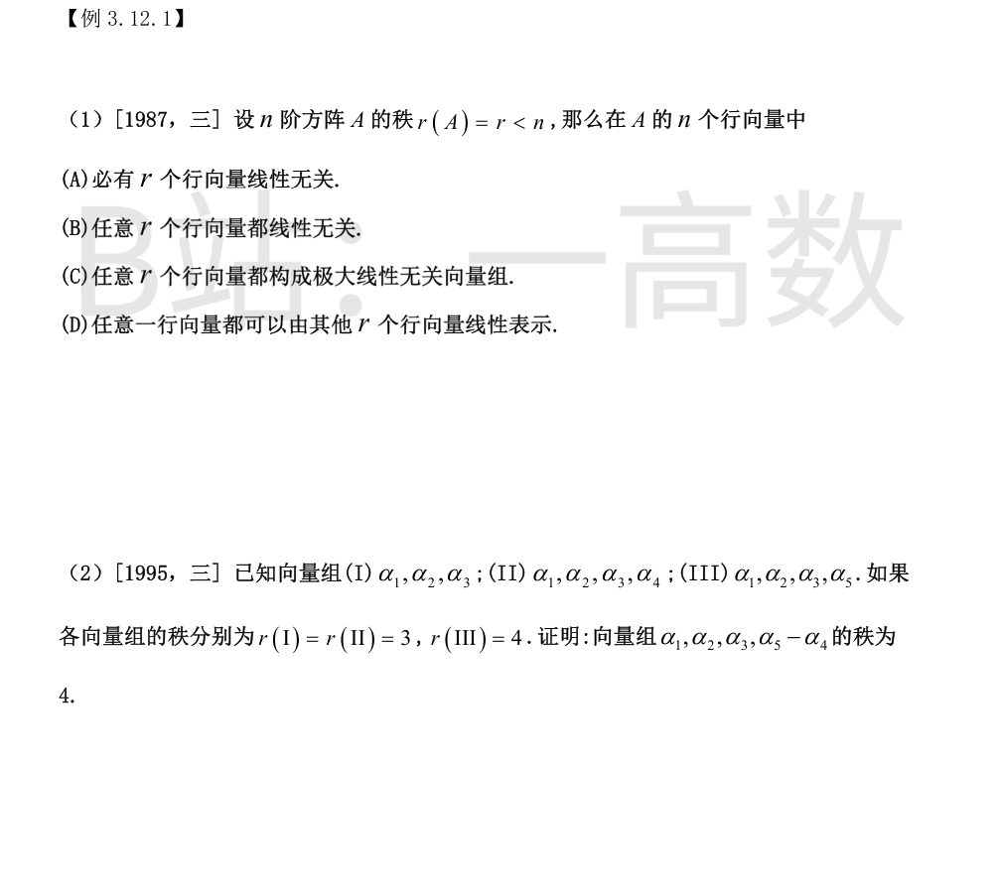
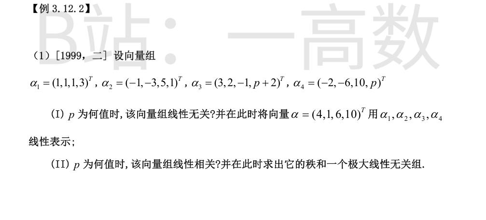

矩阵的秩等于行秩，$r(A)=r$ 说明 $A$ 的行向量组的极大无关组恰含 $r$ 个向量，故必存在（必有）$r$ 个行向量线性无关，选 (A)。
(B)(C) 错：「任意 $r$ 个」可能含线性相关的部分组，如行向量 $(1,0),(2,0),(0,0)$ 中任取含前两行的两组即相关；
(D) 错：极大无关组之外的行才必可由极大无关组表示，且「其他 $r$ 个」未必无关。如行向量 $(1,0,0),(0,0,0),(0,0,0)$，$r=1$，第一行不能由其余 $r=1$ 个（零向量）线性表示。
由 $r(\mathrm{I})=3$ 知 $\alpha_1,\alpha_2,\alpha_3$ 线性无关；由 $r(\mathrm{II})=3$ 知 $\alpha_4$ 可由 $\alpha_1,\alpha_2,\alpha_3$ 唯一线性表示：
$$\alpha_4=\lambda_1\alpha_1+\lambda_2\alpha_2+\lambda_3\alpha_3$$
由 $r(\mathrm{III})=4$ 知 $\alpha_1,\alpha_2,\alpha_3,\alpha_5$ 线性无关。
设有 $k_1,k_2,k_3,k_4$ 使 $k_1\alpha_1+k_2\alpha_2+k_3\alpha_3+k_4(\alpha_5-\alpha_4)=0$，代入 $\alpha_4$ 的表达式：
$$(k_1-k_4\lambda_1)\alpha_1+(k_2-k_4\lambda_2)\alpha_2+(k_3-k_4\lambda_3)\alpha_3+k_4\alpha_5=0$$
由 $\alpha_1,\alpha_2,\alpha_3,\alpha_5$ 线性无关得 $k_4=0$，进而 $k_1=k_2=k_3=0$。
故 $\alpha_1,\alpha_2,\alpha_3,\alpha_5-\alpha_4$ 线性无关，其秩为 4。证毕。

对以 $\alpha_1,\alpha_2,\alpha_3,\alpha_4$ 为列的矩阵作初等行变换：
$$\begin{pmatrix}1&-1&3&-2\\ 1&-3&2&-6\\ 1&5&-1&10\\ 3&1&p+2&p\end{pmatrix}\xrightarrow{\substack{r_2-r_1\\ r_3-r_1\\ r_4-3r_1}}\begin{pmatrix}1&-1&3&-2\\ 0&-2&-1&-4\\ 0&6&-4&12\\ 0&4&p-7&p+6\end{pmatrix}\xrightarrow{\substack{r_3+3r_2\\ r_4+2r_2}}\begin{pmatrix}1&-1&3&-2\\ 0&-2&-1&-4\\ 0&0&-7&0\\ 0&0&p-9&p-2\end{pmatrix}$$
故向量组的行列式 $\det=1\cdot(-2)\begin{vmatrix}-7&0\\ p-9&p-2\end{vmatrix}\cdot(\pm1)=14(p-2)$。
(I) $p\neq2$ 时 $\det\neq0$，线性无关。此时解 $x_1\alpha_1+x_2\alpha_2+x_3\alpha_3+x_4\alpha_4=\alpha=(4,1,6,10)^{T}$，对增广矩阵施行同样行变换可得：
$$x_3=1,\qquad x_2+2x_4=1,\qquad (p-2)x_4=1-p$$
解出 $x_4=\dfrac{1-p}{p-2},\ x_2=\dfrac{3p-4}{p-2},\ x_3=1,\ x_1=2$，即
$$\alpha=2\alpha_1+\frac{3p-4}{p-2}\alpha_2+\alpha_3+\frac{1-p}{p-2}\alpha_4$$
(II) $p=2$ 时第 3、4 行相同，秩 $r=3<4$，向量组线性相关；行阶梯形主元位于第 1、2、3 列，故一个极大线性无关组为 $\alpha_1,\alpha_2,\alpha_3$。
此时解 $\alpha_4=x_1\alpha_1+x_2\alpha_2+x_3\alpha_3$ 得 $(x_1,x_2,x_3)=(0,2,0)$，即 $\alpha_4=2\alpha_2$。